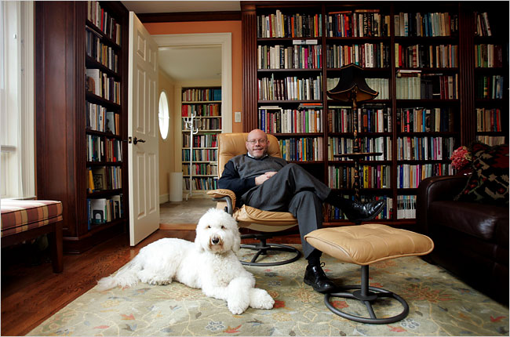

Dr. Christopher Ross has provided psychotherapy and supervised the psychotherapeutic work of other mental health professionals in a variety of settings including the Centre for Addiction and Mental Health (CAMH) and Youthdale Treatment Services in Toronto, and the Southdown Institute for Religious and Clergy in Aurora. Until recently Dr. Ross was Associate Professor in Psychology and Religion in the Department of Religion and Culture at Wilfrid Laurier University, Waterloo.
He is currently associated with Waterloo Lutheran Seminary teaching world faiths in psychology perspective, and a course entitled Mindfulness and Psychotherapy. A current research project investigates the ways in which sensitivity to personality differences and familiarity with a variety of meditation methods may make psychotherapy and the development of mindfulness more efficient and effective in everyday-life.
He completed his doctoral training with Drs Charles and Robert Carkhuffauthors of Towards Effective Counselling and Psychotherapy , the classic text in the history of psychotherapy outcome research.
Psychotherapy
Dr. Ross draws on a variety of psychological methods. His priority is to connect those seeking reduction in their distress - and an increase in their sense of wellbeing - to capacities within themselves for rest, resourcefulness and worth.

Concerns
Those concerns that Dr. Ross’ clients have brought to him have varied from feeling anxious to feelings of being worn out, challenges to personal and social meaning, problems with intimacy and confidence, as well as the developmental challenges that each life-stage presents:
“I have found many seeking carry more grief than they realise, while others more anger. Mindful awareness of either releases energy that then naturally flows toward what they really value”
Approaches
Dr. Ross incorporates a variety of approaches into the psychotherapy that he offers. Barriers are explored, for example, to the ability to self-soothe, as are systems of belief – whether religious or secular - that may bring suffering or alternatively provide a resource for the recovery of satisfaction with life. While he may draw on his knowledge of psychological diagnoses to guide a healing process, more often he organises his work with clients around such existential concerns as finding meaning, dealing with death, loneliness and intimacy, and the sense of human freedom or its absence.
Fees
$135 Initial Consultation
Ongoing Psychotherapy – a sliding scale is applied
Consultations in Personality Type
A supplement to psychotherapy or as an aid to a more personalised path to self-development Dr. Ross found two kinds of typologies of personality to be helpful, Jung’s typology using the Myers Briggs Type Indicator, and the Enneagram of the Narrative Tradition and the Riso Hudson Enneagram Type Indicator. Much of his research and teaching while at the Department of Religion and Culture of Wilfrid Laurier University has centred upon application of personality type to personal and spiritual development over the human life-cycle.
Fee
$135 for initial and subsequent consultations
Psychotherapy Supervision
Dr. Ross has experience supervising the psychotherapy offered by health professionals and educators in a number of different settings, including out-patient and in-patient treatment at the Centre for Addiction and Mental Health, Toronto, Youthdale Treatment Centres, Ontario, and the NIMH-funded Comprehensive Community Mental Health Centre in Youngstown, Ohio. Currently his clinical supervision includes those seeking registration with the newly forming Ontario College of Psychotherapists.
Approaches
The methods that Dr. Ross uses in supervision vary with the needs of the individual psychotherapist. Overall he uses a competency based model pioneered by the American Psychological Association to organise the components of supervision that he provides. These may vary from case management methods, helping with premature terminations, low show rates and the intersectionality of gender, ethnicity and class for those professionals working in clinics and treatment services, to the intricacies of technique, transference and counter-transference in individuals’ independent practices, as well as advising on legal and ethical issues arising from the practice of psychotherapy.
Fees
$135 Initial Consultation
Ongoing Psychotherapy – a sliding scale is applied
Contact
I currently live in Kitchener, ON., and am able to meet with you within the KW region.
If you would like to set up a meeting, you may call me at (604) 787-1355